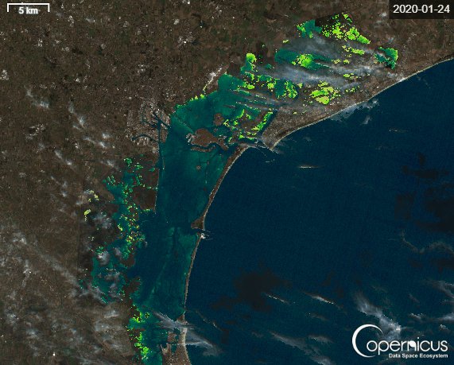

Capitolo II
Laguna di Venezia
Un sistema di transizione fra terra e mare, governato dalle stagioni, dalle maree e dall'attività umana. I dati 2025 raccontano una stagionalità marcata ma uno stato complessivo ancora buono.


Sentinel-2 L2A · Copernicus Data Space Ecosystem
Clorofilla nel 2025
La concentrazione di clorofilla-a mostra una forte stagionalità, tipica delle lagune eutrofiche dell'Adriatico settentrionale.
| Periodo 2025 | Clorofilla media | Note |
|---|---|---|
| Febbraio | ≈ 1,11 µg/L | max 2,8 |
| Maggio | ≈ 2,13 µg/L | max 14,6 |
| Luglio–Agosto | ≈ 2,68 µg/L | max 10,2 — picco fino a 7,1 nelle stazioni interne |
| Ottobre–Novembre | ≈ 0,72 µg/L | max 1,8 |
7,1 µg/L
Picco estivo di clorofilla osservato in Laguna nel 2025
- · In inverno la produttività biologica è bassa.
- · In estate si osserva un netto aumento del fitoplancton.
- · Il picco di luglio–agosto è compatibile con temperature elevate, maggiore radiazione solare, disponibilità di nutrienti e minore ricambio idrico.
Sedimenti e solidi sospesi
I valori più alti tra primavera ed estate possono essere collegati a moto ondoso da traffico nautico, risospensione dei sedimenti, crescita biologica ed eventi di marea e vento.
| Periodo | TSS medio | Lettura |
|---|---|---|
| Febbraio | ≈ 3,9 mg/L | Acqua più limpida, basso moto ondoso |
| Maggio | ≈ 7,1 mg/L | Risospensione primaverile dei sedimenti |
| Luglio–Agosto | ≈ 6,1 mg/L | Traffico nautico, crescita biologica |
| Ottobre–Novembre | ≈ 3,2 mg/L | Stabilizzazione autunnale |
Nutrienti disciolti (medie 2025)
Quattro campagne ARPAV su 30 stazioni della Laguna di Venezia. L'azoto totale disciolto cresce in autunno, il fosforo cala progressivamente, i silicati seguono la stagionalità del fitoplancton.
| Periodo | Azoto tot. disciolto (mg/L) | Fosforo tot. disciolto (mg/L) | Silicati disciolti (mg/L) |
|---|---|---|---|
| Febbraio | 0,22 | 0,028 | 0,37 |
| Maggio | 0,28 | 0,019 | 1,08 |
| Luglio–Agosto | 0,16 | 0,010 | 0,50 |
| Ottobre–Novembre | 0,44 | 0,017 | 1,07 |
Carbonio organico particellato
Il POC raddoppia tra inverno ed estate, segnale di intensa produzione biologica e di maggiore biomassa fitoplanctonica in colonna d'acqua.
| Periodo 2025 | POC medio |
|---|---|
| Febbraio | ≈ 0,37 mg/L |
| Maggio | ≈ 0,73 mg/L |
| Luglio–Agosto | ≈ 0,88 mg/L |
| Ottobre–Novembre | ≈ 0,22 mg/L |
Clorofilla e sedimenti
Tra le due variabili emerge una correlazione positiva moderata, r ≈ 0,45.
r ≈ 0,45
Quando aumentano i solidi sospesi tende ad aumentare anche la clorofilla. I sedimenti rilasciano nutrienti, la torbidità è associata a maggiore materiale organico e il fitoplancton stesso contribuisce alla frazione sospesa.
Segnali ecologici dell'estate 2025
- Aumento della clorofilla
- Carbonio organico particellato (POC) in crescita
- Nutrienti disciolti più abbondanti
- Silicati elevati
Indicano elevata attività fitoplanctonica, possibile dominanza di diatomee e condizioni favorevoli a un'eutrofizzazione moderata.
Qualità complessiva
Stato generale
- · Ossigeno disciolto generalmente buono
- · Salinità stabile
- · pH relativamente alcalino (~ 8)
- · Assenza di anossia grave
- · Sedimenti sospesi moderati
Criticità potenziali
- · Aumento estivo della produttività biologica
- · Sensibilità alle ondate di calore
- · Ristagno idrico
- · Pressione antropica costante